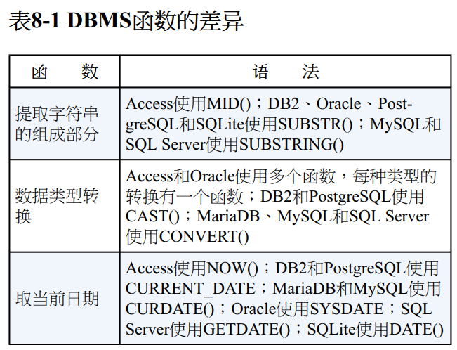

最近看SQL必知必会，记录下笔记
结束sql语句
多条sql语句必须以分号分割。多数dbms不需要再单挑sql语句后加分号
sql和大小写
sql语句不区分大小写，对sql关键字使用大写，对列名和表名使用小写
使用空格
所有的空格都被忽略，可以写成一行或者多行
检索不同的值
1
| SELECT DISTINCT vend_id FROM Products;
|
DISTINCT关键字作用于所有的列，不仅仅是跟在其后的那一列。除非多列完全相同，否则所有的行都会被检索出来。
限制结果
1
2
3
4
5
6
7
8
|
SELECT TOP 5 prod_name FROM Products;
SELECT prod_name FROM Products FETCH FIRST 5 ROWS ONLY;
SELECT prod_name FROM Products WHERE ROWNUM <= 5;
SELECT prod_name FROM Products LIMIT 5;
|
偏移
排序
1
2
| SELECT prod_id, prod_price, prod_name FROM Products ORDER BY prod_price, prod_name;
|
范围值检查
1
| SELECT prod_name, prod_price FROM Products WHERE prod_price BETWEEN 5 AND 10;
|
空值检查
1
| SELECT prod_name FROM Products WHERE prod_price IS NULL;
|
拼接字段、使用别名
1
2
3
|
SELECT Concat(vend_name, '(', vend_country, ')') AS vend_title FROM Vendors ORDER BY vend_name;
|
函数
